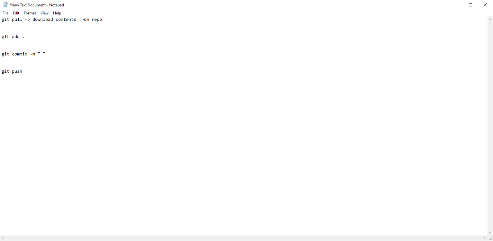
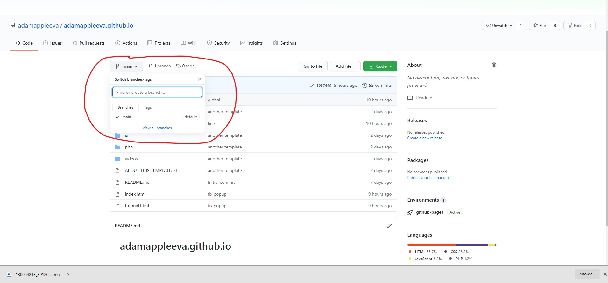
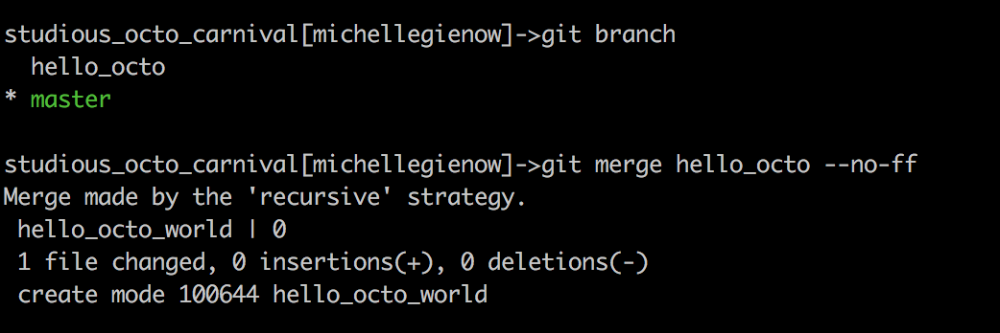
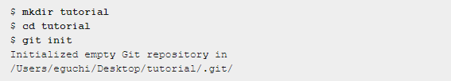
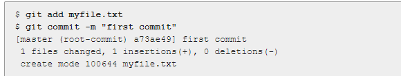

1. Git and Github
☠ FIRST, WE NEED TO UNDERSTAND WHAT ARE GIT AND GITHUB?

Git and GitHub are not the same thing. Git is an open-source, version control tool created in 2005 by developers working on the Linux operating system; GitHub is a company founded in 2008 that makes tools which integrate with git. You do not need GitHub to use git, but you cannot use GitHub without using git. There are many other alternatives to GitHub, such as GitLab, BitBucket, and “host-your-own” solutions such as gogs and gittea. All of these are referred to in git-speak as “remotes”, and all are completely optional. You do not need to use a remote to use git, but it will make sharing your code with others easier.
Git
is an open-source version control system that was started by Linus Torvalds—the same person who created Linux. When developers create something (an app, for example), they make constant changes to the code, releasing new versions up to and after the first official (non-beta) release. Version control systems keep these revisions straight, storing the modifications in a central repository. This allows developers to easily collaborate, as they can download a new version of the software, make changes, and upload the newest revision. Every developer can see these new changes, download them, and contribute.Similarly, people who have nothing to do with the development of a project can still download the files and use them.
GitHub
is a code hosting platform for version control and collaboration. It lets you and others work together on projects from anywhere. GitHub is the single largest host for Git repositories, and is the central point of collaboration for millions of developers and projects. A large percentage of all Git repositories are hosted on GitHub, and many open-source projects use it for Git hosting, issue tracking
The difference
between Git and Github is that Github is a website while Git is an application.
☠ Sign up for Github
Click the link to go to Github sign up website. Github here

Then, you can sign up by fill in the blank your USERNAME, EMAIL ADDRESS, AND PASSWORD.
☠ Installing Git to your PC
Click the link to download Git to your PC. Git download here

Depending on what kinds of your computer, choose the appropriate version: MAC, WINDOWN, OR LINUX?
After installing both Git and Github, you can tried to use them via Visual Studio Code
To download Visual Studio Code, click here: Visual Studio Code2. Basic Level Git And Github Using
☠ The first thing is to create a repository:
In the picture below, you can create a new repository by clicking New in the left of your screen
{kind=link}
⬇
Then a new screen will show up like the picture below. Create your repo name at the repository name followed the syntax reponname.github.io
Also, Remember to add README.md

Now, you have your new Repo ‼
⬇
☠ Next, open the Visual Studio Code to use Git.
First, open the Terminal on the View. See the picture below!
{kind=link}
⬇
- Follow the commands below and register your username and user email which you registered for your Github account:

Your Github username: Your Name ➡ use command: git config --global user.name "Your Name"
Your Github rregistered email: you@example.com ➡ use command: git config --global user.email "you@example.com"
⬇
{kind=link}
Then, use git clone + your github repo link so that you can use Git to work on your Repo.
⬇
- Common commands that you should know üíØüíØ
After creating and working on your file, you probably want to upload all your file to your repo on Github. Then you use those following commands:
git add . to add all the files
git commit -m " " to create your commit. It should demonstrate what is it!
git push to push all the files to your Repo
See the descripted picture below:

3. HOW TO RESOLVE THE CONFLICT
What is conflict?
In the future, if you pursuit IT career, you probably will work as a team. Supposed you are working on your boss's repository. You make your code, upload all your files in your boss's repository but some of your file name is the same as your boss's file names. That is when the conflict happen! The reason is that git cannot detect which file is the one to use since you are having 2 files with the same name. So how to resolve the conflict?
The anwser is GIT PULL COMMAND
The GIT PULL COMMAND is used to fetch and download content from a remote repository and immediately update the local repository to match that content. Merging remote upstream changes into your local repository is a common task in Git-based collaboration work flows.
In other words, GIT PULL COMMAND will pull all the files inside your boss's repo back to your computer. Then, you can working on those files, edit them, and finally use 3 command lines I mentioned above to push all the files you want to your boss's repo again. Therefore, you should always use GIT PULL COMMAND before using other commands.
- Solution to solve the confliction:
git pull FIRST ➡ git add . ➡ git commit -m " " ➡ git push

{kind=link}
4. BRANCH

{kind=link}
Definition of Branch:
A branch is essentially is a unique set of code changes with a unique name. Each repository can have one or more branches. The main branch — the one where all changes eventually get merged back into, and is called master. This is the official working version of your project, and the one you see when you visit the project repository at github.com/yourname/projectname.
Do not mess with the master. If you make changes to the master branch of a group project while other people are also working on it, your on-the-fly changes will ripple out to affect everyone else and very quickly there will be merge conflicts, weeping, rending of garments, and plagues of locusts. It’s that serious.
Why is the master so important to not mess with? One word: the master branch is deployable. It is your production code, ready to roll out into the world. The master branch is meant to be stable, and it is the social contract of open source software to never, ever push anything to master that is not tested, or that breaks the build. The entire reason GitHub works is that it is always safe to work from the master.

⬇
How to create new branch?First, you must check for any other existing branches. we can view all existing branches by typing “git branch -a” into terminal, which tells git that we want to see ALL the branches in this project, even ones that are not in our local workspace. See the picture below:

This returns output you see in the code example image above. Its appearance may vary somewhat depending on your OS and terminal application, but the info is ultimately the same.
The asterisk next to master in the first line of the output indicates that we are currently on that branch. The second line tells us that on our remote, named origin, there is a single branch, also called master. (Remember that our remote is the GitHub repo for this project).
⬇
To create this new branch, type “git checkout -b branchNameHere” (so, in our case, “git checkout -b hello_octo”).We can also use the git checkout command to toggle back and forth between our two branches. Type “git checkout branchName” to switch to that branch. So, “git checkout master” takes you to master while “git checkout hello_octo” takes you back to hello_octo branch.


As you can see in the picture above, you now have 2 branches. The question now is after working on your own branch, how could you merge your branch with the master branch???
⬇
Very important: when merging, we need to be on the branch that we want to merge toIn this case, since we want to merge from our working branch, where the “hello_octo_world” file exists, to our master branch, we need to be on the master.
Once on the master branch, all we have to do is run the merge command. The best way to do this is to type “git merge YOUR_BRANCH -–no-ff" tells git we want to retain all of the commit messages prior to the merge. This will make tracking changes easier in the future

{kind=link}
⬇
The last thing is to let GitHub know that we’ve been working with our own branch by using GIT PUSH.
Some cleanup is in order now: since we have successfully merged our hello_octo branch, we no longer need it. To delete a merged branch, use “git branch -d branchName”:

5. Tag
Definition of Tag:
Tagging is generally used to capture a point in history. A tag is like a branch that doesn’t change. Unlike branches, tags, after being created, have no further history of commits
Type of tag:
{kind=link}
Lightweight tag and Annotated tag
First, Create a new folder, then create an empty repository there. Here has created a directory called tutorial
{kind=link}
⬇
Then create a file. In the picture below, it is named myfile.txt
{kind=link}
Lightweight tag:
The syntax is: git tag + tag_name. For instance, the tag_name is "apple", then git tag apple
Then use "git log --decorate" in order to display history including tag information.
Annotated tag:
The syntax is: git tag -a + tag_name. For instance, the tag_name is "apple", then git tag -a apple
Delete tag:
Use git tag -d + tag_name. For instance, the tag_name is "apple", then git tag -d apple
That's enough for you to work on your project. Thank you !